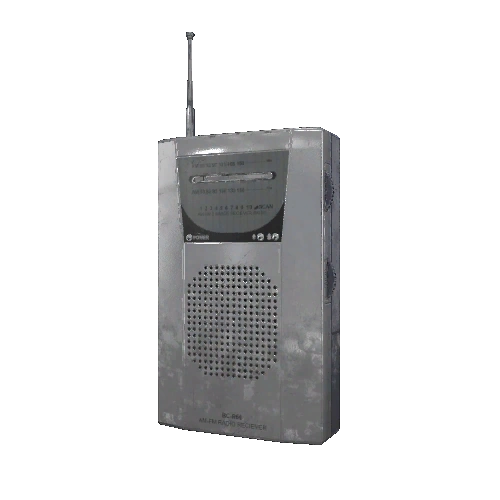

Tier 1
An old FM/AM radio. It's small and compact, but the speaker isn't the best quality.

Tier 2
The P-SB7T Spirit Box is built solely for conversations with the unknown. The backlit screen helps investigations in the dark.

Tier 3
The SB11-Z is a much larger Spirit Box, capable of scanning two frequency channels at the same time.